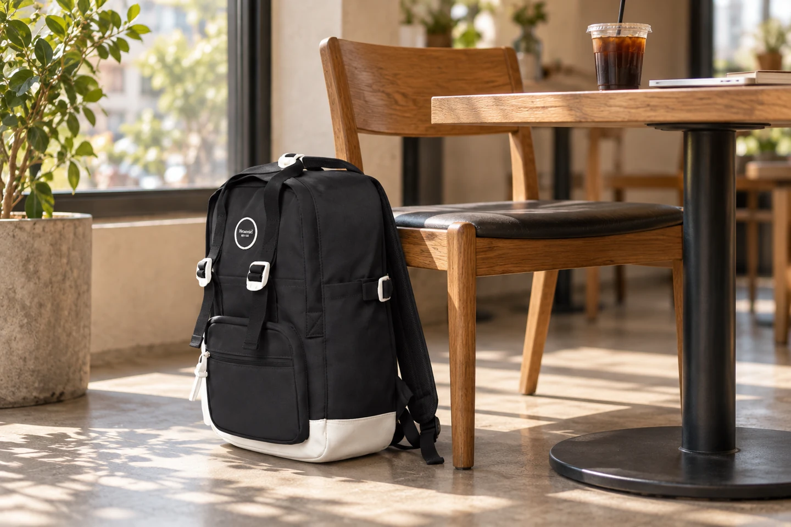

카페에서 컵의 자리와 백팩의 자리 나누기

카페에서는 음료와 백팩이 좁은 좌석 주변에 함께 놓입니다. 앉을 때 괜찮아 보였던 위치도 의자를 움직이거나 가방을 꺼내는 순간에는 겹칠 수 있습니다. 컵의 자리를 정하고 가방은 어디에 놓을지 나누어보세요. 끈까지 놓인 방향을 보면 테이블과 의자 사이에서 무엇을 먼저 움직여야 할지 생각하기 쉽습니다.
먼저 선택한 자리의 공간을 살펴봅니다. 문과 통로, 옆자리 사람들이 움직이는 방향을 봅니다. 매장에서 안내한 보관 장소가 있으면 그 방식을 따릅니다. 의자 옆이라는 이유만으로 모든 카페에서 같은 위치가 적절하지는 않습니다. 가방이 놓일 면과 내 발의 자리, 다른 사람의 이동이 실제로 겹치는지 확인합니다.
앉기 전에 정할 두 위치
음료는 가방 위나 열린 주머니를 임시 받침으로 쓰지 않고 테이블의 자리에 둡니다. 컵을 놓을 때 가방을 옮기는 방향과 닿지 않는지도 봅니다. 뚜껑이 있다는 이유로 가방 안에 다른 짐과 함께 넣을 수 있다고 생각하지 않습니다. 사용하는 용기의 안내가 있으면 그에 맞춰 다루고 좌석에서는 음료와 개인 짐의 위치를 구분합니다.
가방을 바닥에 둘 수 있는 자리라면 현재 상태를 눈으로 봅니다. 물기나 다른 물건이 있는 곳에 놓기 전에 위치를 바꿀 수 있습니다. 가방 본체를 두었다면 끈이 통로로 나오지 않는지 살펴보세요. 가방이 의자 다리에 걸리거나 내 발을 움직일 공간을 차지한다면 다시 놓을 위치를 찾아봅니다.
의자에 걸고 싶다면 의자와 가방의 실제 안내 및 상태를 확인합니다. 모든 의자가 같은 방식으로 짐을 받치는 것은 아니므로 외형만으로 가능하다고 정하지 않습니다. 의자를 빼는 동작에서 가방이 어떻게 움직이는지 보고, 주변을 방해하거나 다른 물건과 겹치면 다른 위치를 선택합니다. 매장에 물어볼 보관 정보가 있으면 확인할 수 있습니다.
이 글에 소개한 Himawari No.1088M 제품 정보는 카페 외출의 가방을 살펴볼 자료입니다. 도착했을 때 무엇을 꺼낼지 먼저 정하면 가방을 열어놓는 범위를 줄일 수 있습니다. 노트나 기기를 쓸 계획이면 필요한 묶음만 펼치고, 가방과 컵이 각각 놓일 자리를 실제 좌석에서 찾아보세요. 짐을 모두 테이블에 올려야 준비가 끝나는 것은 아닙니다.

작은 테이블에서는 물건을 겹쳐 올리고 싶은 순간이 생깁니다. 그래도 컵 주변에 무엇을 꺼내고 되담을지 생각하면 다른 선택이 가능합니다. 지금 쓰지 않는 소품은 가방에 남겨두고 필요한 물건만 꺼낼 수 있습니다. 여러 물건을 나누어 펼쳤다면 나갈 때 확인할 위치가 그만큼 늘어납니다. 현재 테이블에서 실제로 쓴 물건을 알아보게 정리합니다.
일어설 때는 손에 남은 물건부터
잠깐 자리를 옮겨야 한다면 개인 소지품의 보관 방법을 정합니다. 가방을 두고 간다는 사실만으로 필요한 관리가 해결된다고 생각하지 않습니다. 매장의 안내와 자신의 상황에 맞춰 가지고 갈 것을 고릅니다. 컵과 가방, 의자를 동시에 움직이려 하지 않고 무엇을 먼저 정리할지 생각해 한 동작씩 이어봅니다.
나갈 때에는 테이블에 꺼낸 기기와 노트, 작은 개인 물건을 원래 묶음으로 돌려놓습니다. 연결된 선을 썼다면 기기 안내에 맞게 마치고 정리합니다. 가방을 들기 전에 의자 다리나 다른 짐에 끈이 걸려 있지 않은지 봅니다. 본체가 바로 따라오지 않으면 더 세게 당기기보다 무엇에 걸렸는지 확인합니다.
가방을 멜 때 컵의 위치도 다시 봅니다. 옆자리 쪽으로 몸을 돌리면 가방이 어느 방향으로 움직이는지 생각합니다. 좁은 공간에서는 여유 있게 움직이고 주변 사람의 통행을 살핍니다. 손에 음료를 들고 있다면 가방을 메는 동작을 먼저 마친 뒤 컵을 집는 방식도 가능합니다. 실제 상황에서 안정적으로 할 수 있는 순서를 고르면 됩니다.
문을 통과할 때는 손에 무엇이 있는지 확인합니다. 음료와 가방을 각각 들고 문을 열어야 한다면 잠시 정리할 수 있는 자리에서 순서를 나눌 수 있습니다. 컵을 가방 위나 여밈 사이에 끼우는 방식으로 손을 비우지 않습니다. 다른 사람이 문을 잡아주어도 끈이나 들고 있는 봉투가 손잡이에 걸리지 않는지 주변을 봅니다.
다시 메기 전의 상태 확인
바닥에 두었던 가방은 메기 전에 닿았던 면을 살펴봅니다. 눈에 보이는 물기나 자국이 있으면 현재 상태를 확인하고 관리 안내에 맞춰 정리합니다. 음료가 닿은 것인지 확실하지 않다면 원인을 먼저 단정할 필요는 없습니다. 발견한 위치와 상황을 기록하면 필요한 문의를 할 때 설명할 자료가 됩니다.
가방 안에 음료나 다른 내용물이 묻은 것을 발견했다면 함께 들어 있는 물건을 구분합니다. 제거 방법을 모르는 상태에서 바로 문지르거나 세정제를 고르지 않습니다. 제품의 관리 표기와 판매처의 안내를 확인해 처리할 방법을 정합니다. 컵을 닫아 들었다는 사실과 가방이 현재 깨끗한 상태라는 확인은 각각 필요합니다.
다음 카페 방문에서는 이번에 물건을 옮길 때 번거로웠던 위치를 참고할 수 있습니다. 가방을 바닥에 두는 것이 항상 답인 것은 아니므로 새 좌석의 공간을 다시 봅니다. 컵은 테이블의 자리에, 개인 짐은 안내된 위치와 이동 방향에 맞춰 놓습니다. 일어날 때 꺼낸 물건을 되담고 끈이 걸리지 않았는지 확인하는 순서로 자리를 떠나봅니다.